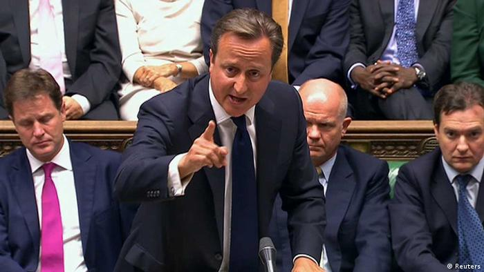

Brexit

EN
EN
Brexit
EN
EN

Background and first attempt for leaving the EC
After the trials and errors of joining the EC, UK needed help and that's how the Treaty of Accession was proposed. As a part of the EFTA UK sent Treaty to Denmamrk, Norway and Ireland. It was the application of Britain to join the EC but if the UK was not accepted in the EC again then the other sides of the treaty would not join the EC. It was signed by Edward Heath in the UK in 1972. The other sides started referendums for the treaty. In Denmark it was accepted with 63.6% voting 'yes' and Ireland the vote was 81.3% voting 'yes'. The only country that couldn't sign the treaty was Norway because the referendum turned out with 53.5% voting against. On 1 January 1973 the three countries became part of the EC. The joining of the EC was during the governance of the Conservative Party which was more Europhile than The Labour Party. In the elections in 1974 The Labour Party won the election with a commitment to renegotiate Britain's terms of membership of the EC. In 1975 they held a referendum on wherther to remain in the EC. The result was negative and 67.2% voted to stay in.
Rising scepticism
The scepticism started with Margaret Thatcher, who although supported the Common Market and the Single European Act, warned on her Bruges speech in 1988 against "a European super-state exercising anew dominance from Brussels". The Financial Times wrote "With hindsight, some see this as the start of the campaign for Brexit". The next big step in the euroscepticism was the creation of the UK Independence Party or UKIP, which was highly Eurospectip political party in 1993. It achieved third place in the 2004 elections, second place in the 2009 elections and won in the 2014 election with 27.5% of voters supporting them. This was the first time a party different from the Liberal and the Conservative party won the elections.

Margaret Thatcher

Nigel Farage

David Cameron
Negotiations
Before the 2016 referendum there was another call for a referendum on the UK's EU membership in 2012 but it was rejected by the Prime Minister David Cameron. He wanted to negotiate for a change in the relationship between the UK and the EU. With rising presure from different MPs and the rise of UKIP, Cameron was forced to schedule a referendum on the UK's EU membership. In 2013 in a Bloomberg interview he promised that the Conservative Party will hold a referendum before the end of 2017. Cameron started negotiating with the EU of 4 key points: protection of the single market for non-eurozone countries, reduction of "red tape", exempeting Britain from "ever closed union" and restricting immigration from the EU. After renegotiations in February 2016 it was revealed that the EU could make some compromises but with a lot of procedures and that is why Cameron announced the date for EU membership referendum. It was 23th of June 2016.
The Result
|
Leave: 17,410,742 (51.9%) |
Remain: 16,141,241 (48.1%) |
||
| ▲ | |||
Developer
Miroslav Mihaylov
Email: miro7543@gmail.com
Phone: +359-98-823-1814
Address: Veliko Tarnovo, Bulgaria
Developer
Petar Nedyalkov
Email: miro7543@gmail.com
Phone: +359-98-823-1814
Address: Veliko Tarnovo, Bulgaria
Help
Support
About us
Contact us
©All rights reserved 2021